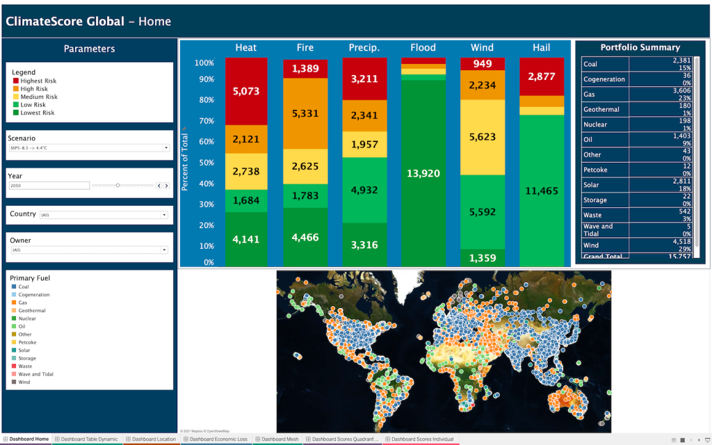
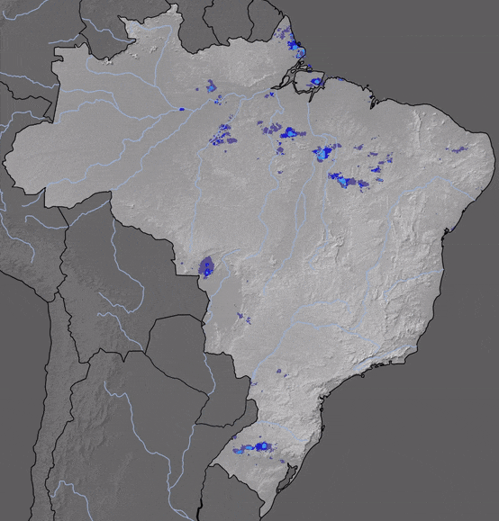
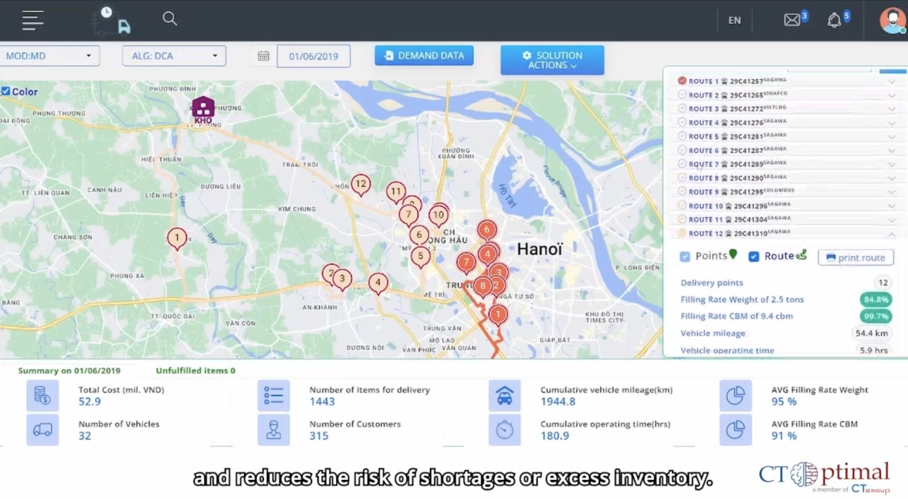
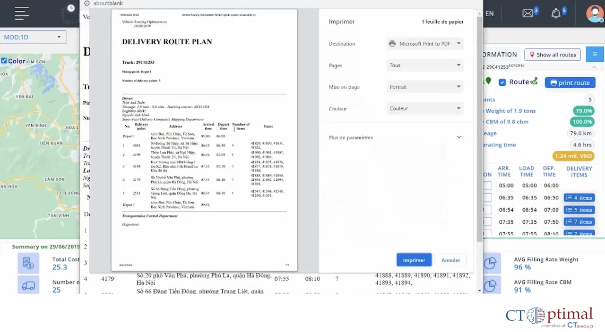

Daniel PHAM
I transform complex scientific and business challenges into scalable production AI systems. With 10+ years of experience bridging theoretical research and enterprise deployment, I engineer high-throughput ML pipelines, geospatial analytics platforms, and agentic workflows.

About Me
Passionate about building scalable AI solutions
I am a Senior / Full-Stack Data Scientist and Ph.D. in Computer Science with a strong commitment to product-driven AI development. Based in Metz (France) and working in Luxembourg, I hold a valid Luxembourg work permit (no visa sponsorship required).
My journey spans over a decade, from lecturing on Computer Science to leading R&D teams in Vietnam, France, and Luxembourg. I specialize in Machine Learning, Geospatial Data Science, Mathematical Optimization, and Agentic AI, taking full end-to-end accountability from scientific modeling to cloud deployment.
I have engineered 10+ production AI/ML systems processing multi-terabyte environmental datasets, 60,000+ IoT/satellite sensors, and automated industrial logistics, consistently boosting operational efficiency and system throughput by 20–40%.
Education
Ph.D. in Computer Science
University of Lorraine, Metz,
France 
Defended Nov 2023, conferred Feb 2024. Focus: ML optimization (DCA), ensemble learning, and LLM fine-tuning in finance & healthcare.
Master in ICT
University of Lorraine, France & USTH
Specialization: Environmental Decision Support Systems.
Bachelor of Science in MIS
National Economics University, Hanoi, Vietnam 
Dual focus: Computer Science and Business (Finance/Management).
Technical Expertise
My comprehensive tech stack
AI, Machine Learning & LLMs
Optimization & Geospatial
Full-Stack, Cloud & MLOps
Professional Journey
My career path, leadership and engineering achievements
Senior Data Scientist / Full-Stack Data Scientist
Databourg-Komunidad, Luxembourg
- Real-time Weather Forecasting (RainVision): Led development of multi-source forecasting models processing telemetry across 60,000+ IoT sensors and geostationary satellite feeds worldwide. Boosted accuracy by 5% via Deep Learning modernization of legacy ML.
- Infrastructure & Pipeline Modernization: Re-architected data pipelines with Airflow, RabbitMQ, Celery & Docker, automating workflows and boosting system speed and throughput by 20–40%.
- Full-Stack GIS Dashboards: Delivered commercial-grade interactive map services (Django/FastAPI/MongoDB/MapboxGL) with secure APIs, adopted by public disaster management agencies across the Philippines, Indonesia, and Brazil.
- Global Climate Risk Platform (KCS): Engineered statistical estimation frameworks analyzing multi-terabyte netCDF datasets for long-term physical climate risk adaptation.
- Agentic AI & Modular Workflows: Designed a custom multi-agent skills architecture (Claude Code) to accelerate team research delivery, streamline peril pipelines, and automate domain knowledge sharing.
Postdoctoral Researcher & Tech Lead
LCOMS - Université de Lorraine, Metz, France
- Tech Lead for "DCASOLVER": Led technical architecture, engineering, and deployment of the web platform prototype (DCASOLVER Demo) powered by DCA mathematical optimization algorithms.
- Mathematical Optimization: Engineered advanced algorithms for large-scale Vehicle Routing Problems (VRP) and GIS-based logistics routing under complex industrial constraints.
- Full-Stack Deployment: Built and deployed scalable RESTful services utilizing Python, Django, FastAPI, and MySQL.
Ph.D. Researcher & R&D Engineer
LGIPM - Université de Lorraine, Metz, France
- Ph.D. Thesis: "Techniques d'apprentissage automatique basées sur DCA avec des applications dans la finance et la santé" (Defended Nov 2023).
- Algorithmic Innovation: Formulated novel DCA-based Weighted Bagging and optimized kernel SVMs, achieving state-of-the-art results on severely imbalanced datasets in financial anomaly detection and clinical patient risk scoring.
- Industry-Defense R&D: Conducted 3 joint research projects for naval defense contractor NAVAL Group, applying Deep Learning, Computer Vision, SLAM, and Robotics for autonomous path optimization.
Computer Science University Lecturer & Researcher
National Economics University, Hanoi, Vietnam
- Teaching: Taught Fundamental Computer Science, Applied Informatics, and Management Information Systems at Bachelor level.
- Research: Conducted academic research in Artificial Intelligence, Machine Learning algorithms, and applied information systems.
GIS Data Engineer & Web Developer
VinTech Group (Vingroup), Hanoi, Vietnam
- AI Logistics System: Engineered an AI-driven logistics and route tracking web platform with Django, Bootstrap, and Google Maps APIs for Vinmart retail operations across 2,000 stores nationwide.
- Data Architecture: Built automated data processing pipelines, designed relational database schemas in MySQL, and managed deployment on AWS.
ML Engineer & Product Owner (AI Lab)
NAL Jsc., Hanoi, Vietnam
- Team Leadership: Led an 8-engineer AI team delivering commercial AI applications and PoCs for the Japanese enterprise market.
- Key Systems: Delivered an Operator Chatbot, Iris Recognition & Pupil Tracking, Face Lock attendance system, and Hate Speech / Sentiment Detection systems.
NLP Engineer
Chappiebot Inc., Ho Chi Minh City, Vietnam
- AI Vehicle Search Platform: Developed core search algorithms and intelligent discovery pipelines for an AI-powered automobile search and recommendation platform (Otonhanh.vn).
- Vietnamese NLP Modules: Engineered end-to-end NLP tasks in Vietnamese: Named Entity Recognition (NER), topic classification, intent parsing, sentiment analysis, and dialogue systems.
Machine Learning Research Intern
LITA - Université de Lorraine, Metz, France
- Autonomous Marine Surface Vessels: Researched long-term autonomy and environmental data acquisition on Unmanned Surface Vessels (USV). Built simulation environments in Python/Pygame and reinforcement learning control models.
Featured Projects
Production geospatial software, meteorological AI & agentic systems

Global Climate Risk Intelligence Platform
Assesses, models, and visualizes physical climate risks and extreme environmental perils across global multi-asset portfolios to support climate adaptation, resilience planning, and multi-hazard decision-making. Fits Generalized Extreme Value (GEV) distributions on historical climate observations to quantify multi-decade return period hazards across standardized climate scenarios.

Real-Time Rainfall Monitoring & Nowcasting Platform
Delivers high-resolution, real-time precipitation tracking and short-term forecasting (nowcasting) to support meteorological monitoring, disaster preparedness, and proactive decision-making. Integrates streaming telemetry from 60,000+ distributed IoT sensors and Himawari geostationary satellite feeds, adopted by public disaster management agencies across the Philippines, Indonesia, and Brazil.


DCASOLVER: Industrial Logistics & Route Optimization Platform
Interactive optimization web prototype built on Difference of Convex functions Algorithms (DCA) developed at Université de Lorraine. Solves complex, large-scale Vehicle Routing Problems (VRP), dynamic fleet dispatching, and multi-depot supply chain routing under strict real-world operational constraints.
Commercial, Research & Engineering Projects
Production commercial deployments, academic & industrial research, internal team toolkits, and AI prototypes
Climate Agent Kit
Internal multi-agent productivity framework designed to accelerate research delivery and automate peril modeling workflows across the team using specialized sub-agent personas (Claude Code, custom skills architecture).
Legal & Regulatory GraphRAG Engine
High-precision knowledge retrieval engine for complex, hierarchical legal corpora; implemented Advanced RAG with Hybrid Search (BM25 + Dense) and Cross-Encoder Reranking to eliminate hallucinations.
Drone Scheduling & Flight Simulation
Research project optimizing flight paths and allocation of aerial drone fleets under energy constraints. Developed an interactive Python/Pygame flight simulation environment to train reinforcement learning controllers.
Autonomous Vessel Guidance
Research project on long-term autonomy and environmental data collection for Kingfisher Unmanned Surface Vessels (USV) using ML control algorithms and simulation at LITA, Université de Lorraine.
Iris Recognition & Tracking
Commercial mobile computer vision system tracking mobile user gaze and engagement via iris position and pupil size with deep learning and real-time edge inference.
Face Access Control System
Internal enterprise biometric solution automating smart employee check-in, greeting, and attendance timekeeping using few-shot deep metric learning and real-time camera streaming.
AI Vehicle Search Platform
AI-powered automobile search and discovery platform executing Vietnamese Named Entity Recognition (NER), intent detection, topic classification, and sentiment analysis at Otonhanh.vn.
Certifications
Generative AI with LLMs
AWS (2024)GenAI for Executives & Leaders
IBM (2024)MLOps with Azure
LinkedIn (2024)MLOps Essentials
LinkedIn (2024)Intro to Large Language Models
LinkedIn (2024)Deep Learning Specialization
Coursera (2018)Data Science in Healthcare
Univ. of Edinburgh (2023)Data Science Ethics
Univ. of Michigan (2023)Publications
A Block Coordinate DCA Approach for Large-Scale Kernel SVM
View DOIDCA-Based Weighted Bagging: A New Ensemble Learning Approach
View DOICost-sensitive weighted bagging DCA based method for imbalanced financial data
NUMTA Conference PresentationTechniques d'apprentissage automatique basées sur DCA
View Official Thesis PDFLet's Connect
I am currently open to Senior Data Scientist, Machine Learning / AI Engineer, and Data Engineer roles.